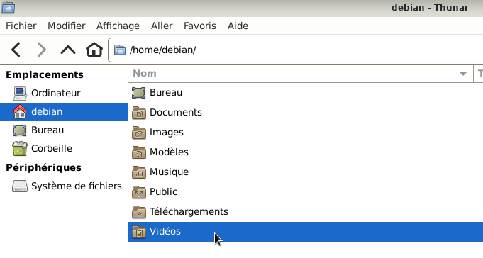
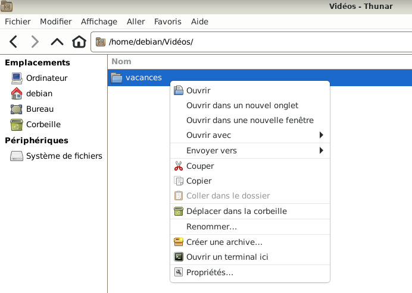
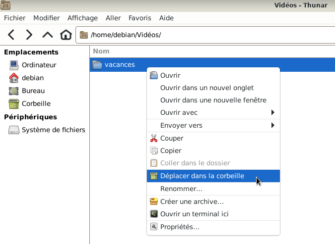
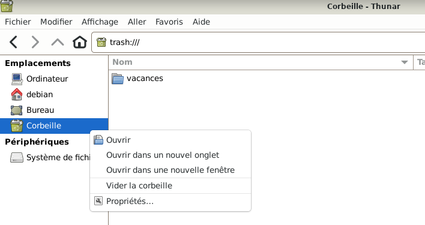
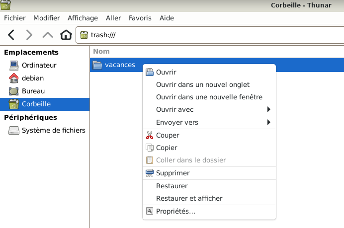
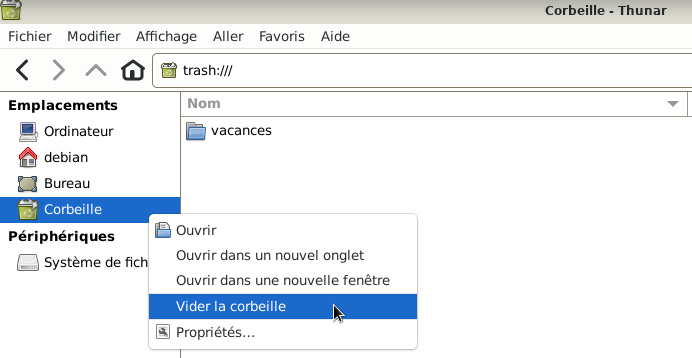
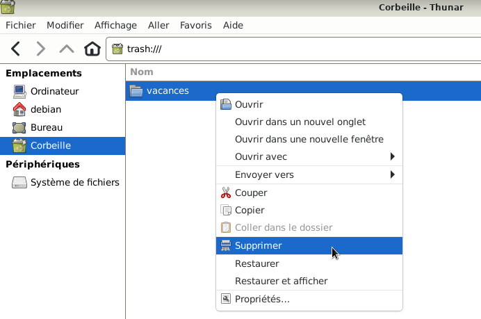
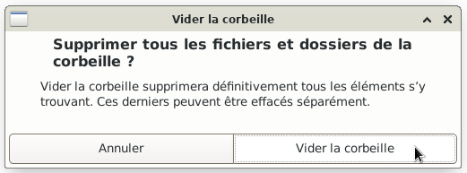
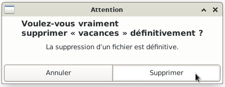
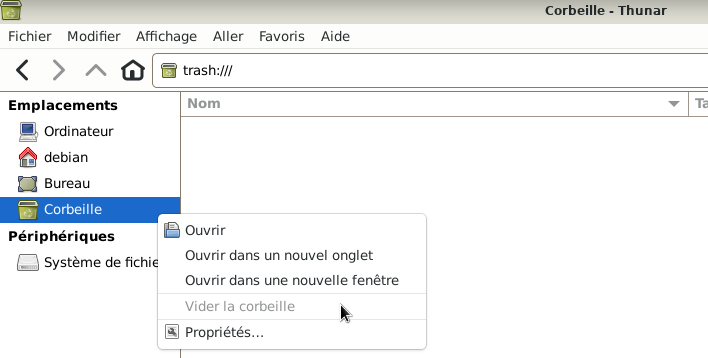

&
Suppression d'un dossier ou d'un fichier : Le site Xfce.
Exemple : Suppression d'un dossier du nom de "vacances" qui se trouve dans le dossier Vidéos
Pour supprimer un fichier suivre la même procédure.







b - Ou supprimer uniquement le dossier : Clic droit > vacances

b - Ou supprimer uniquement le dossier : simple clic > Supprimer

b - Ou supprimer uniquement le dossier : simple clic > Supprimer


Nota : D'autres solutions existent pour supprimer un dossier ou un fichier mais la solution
de le déplacer dans la corbeille permet de le retrouver en cas d'erreur.
Evidemment s'il a été supprimé de la corbeille, il est à ce moment-là supprimé définitivement.

Informations sur le logiciel libre et Merci.
Marques déposées :
Ce site ne fait pas partie de Debian, n'est pas produit par le projet
Debian, ni approuvé par le projet Debian.
Ce site n'est pas affilié à Debian. Debian est une marque déposée appartenant
à Software in the Public Interest, Inc.
Contribuer :
Ce site ne fait pas partie de XFCE, n'est pas produit par le projet
XFCE, ni approuvé par le projet XFCE.
Ce site n'est pas affilié à XFCE.
Ce site est juste réalisé par un passionné.